Minitool Sigmoidaler Quick Fit
Quick-SigFit-Gadget
Zusammenfassung
Das Minitool Sigmoidaler Quick Fit kann verwendet werden, um schnell eine sigmoidale Anpassung auf einen Teil Ihres Diagramms durchzuführen, den Sie interaktiv mit der grafischen Datenauswahl (ROI) definieren.
Origin-Version mind. erforderlich: Origin 2015 SR0
Was Sie lernen werden
- Das Minitool Sigmoidaler Quick Fit in einem Diagramm verwenden
- Ihre Anpassungsoptionen auswählen
- Zum Dialog NLFit wechseln
- Anpassungsergebnisse ausgeben
- X/Y-Werte auf der Anpassungskurve suchen
Schritte
Dieses Tutorial ist mit dem Ordner Analysis:Gadgets:Quick Sigmoidal Fit Gadget im Projekt Analysis (\Samples\Analysis.opj) verbunden, das Sie über Datei: Sample-Projekt öffnen: Analyse im Hauptmenü aufrufen können.
Quick Fit
- Markieren Sie Spalte Col(A) bis Col(D) in der Arbeitsmappe DoseResponseN und wählen Sie im Menü Zeichnen: Symbol: Punktdiagramm, um ein Punktdiagramm zu zeichnen.
- 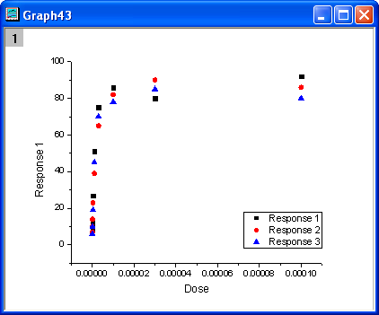
- Klicken Sie doppelt auf die X-Achse, um den Dialog Achsen zu öffnen. Setzen Sie auf der Registerkarte Skalierung den Typ auf Log10 fest und klicken Sie auf OK, um den Dialog zu schließen.
- 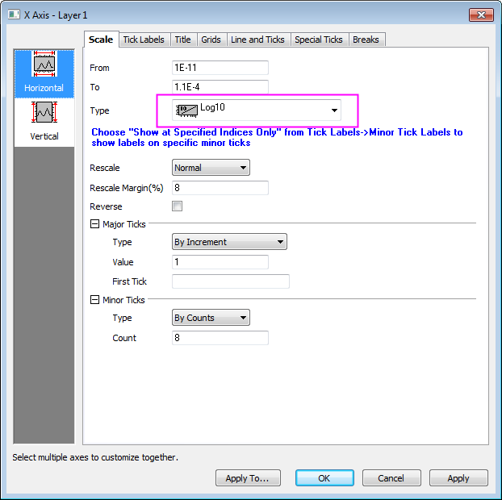
- Klicken Sie auf die Schaltfläche Neu skalieren 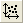, um die Zeichnung mit der richtigen Skalierung zu zeigen.
- 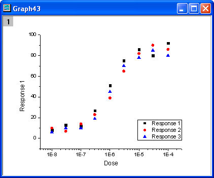
- Wählen Sie Minitools: Sigmoidaler Quick Fit im Hauptmenü, um den Dialog addtool_sigmoidal_fit zu öffnen. Wählen Sie die Funktion Logistic5 in der Auswahlliste Funktion auf der Registerkarte Einstellungen.
- 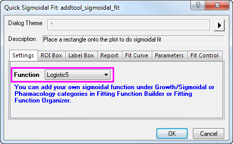
- Wechseln Sie zur Registerkarte Grafische Datenauswahl und deaktivieren Sie die Parameter x0, h und s im Zweig Parameterliste.
- 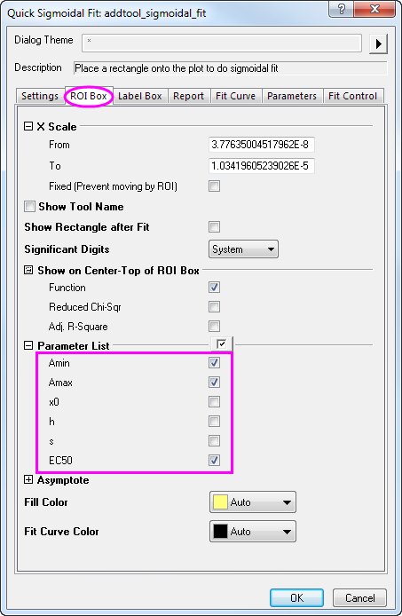
- Wechseln Sie zur Registerkarte Anpassungskurve, wählen Sie Mittelwert, SD in der Auswahlliste Diagrammtyp und Quellmappe, Neues Blatt in der Auswahlliste Anpassungskurve ausgeben in.
- 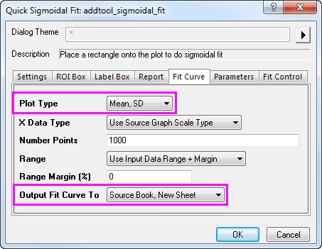
- Klicken Sie auf die Schaltfläche OK, um dem Diagramm das Objekt der grafischen Datenauswahl (ROI) hinzuzufügen. Klicken Sie oben rechts im ROI-Feld auf die Pfeilschaltfläche
 und wählen Sie Auf gesamten Diagrammbereich erweitern im Kontextmenü. Das ROI-Feld umfasst dann den gesamten Datenbereich im Diagramm.
und wählen Sie Auf gesamten Diagrammbereich erweitern im Kontextmenü. Das ROI-Feld umfasst dann den gesamten Datenbereich im Diagramm.- 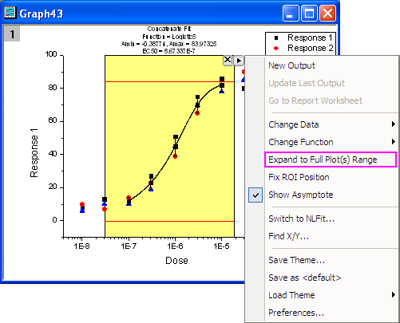
- Klicken Sie erneut auf die Schaltfläche mit dem Pfeil und wählen Sie Einstellungen im Menü. Der Dialog Sigmoidaler Fit Einstellungen wird aufgerufen. Aktivieren Sie in diesem Dialog die Registerkarte Bericht und setzen Sie Ausgabe in auf Kein.
- 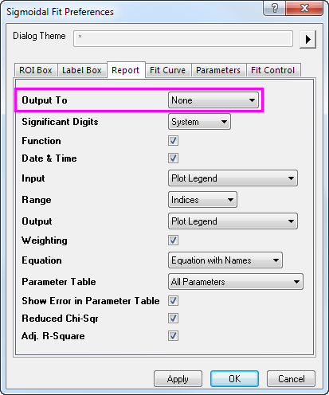
- Klicken Sie auf OK, um den Dialog zu schließen. Klicken Sie dann auf die Pfeilschaltfläche und wählen Sie Funktion ändern: Logistic, um die Anpassungsfunktion auf Logistic zu setzen. Der Beschriftungstext oberhalb der grafischen Datenauswahl wird automatisch aktualisiert.

- Klicken Sie dann auf die Pfeilschaltfläche und wählen Sie Neue Ausgabe, um das Anpassungsergebnis in Arbeitsblatt und Diagramm auszugeben.
- 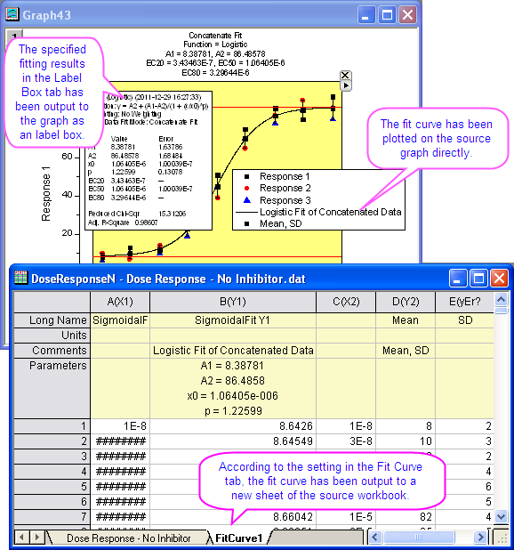
Zu NLFit wechseln
Wenn Sie das Minitool Sigmoidaler Quick Fit verwenden, können Sie einfach auf das Hilfsmittel NLFit umschalten. Mit dieser Funktion können Sie einen detaillierten Anpassungsbericht, einschließlich der aktuellen Einstellungen im Minitool, erhalten.
- Wiederholen Sie Schritt 1 bis Schritt 8, wie oben gezeigt.
- Klicken Sie auf die Pfeilschaltfläche und wählen Sie Auf NLFit umschalten, um den Dialog NLFit mit den vorgenommenen Einstellungen zu öffnen.
- 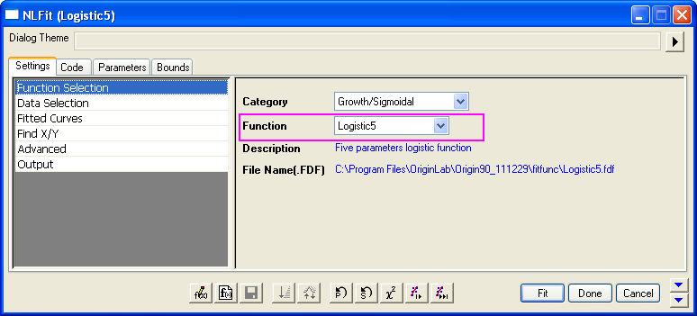
- 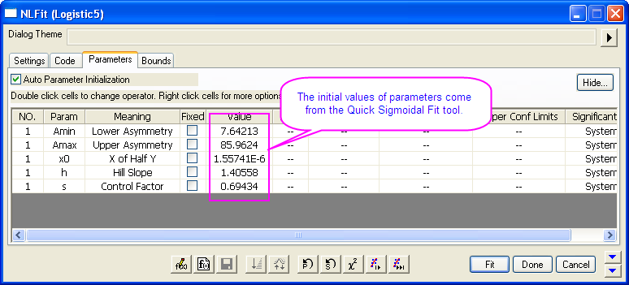
- Klicken Sie auf die Fit-Schaltfläche, um die Anpassung durchzuführen. Die Ergebnisse werden in den Ergebnisblättern und dem Quelldiagramm ausgegeben.
- 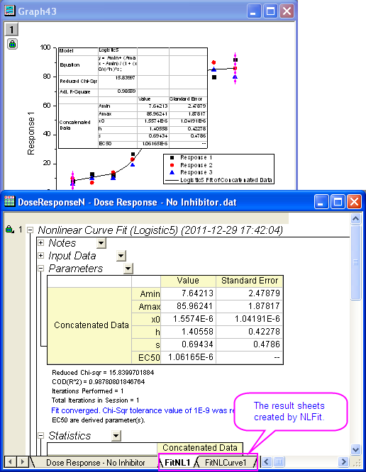
X/Y suchen
Mit diesem Minitool können Sie schnell XY-Werte auf der angepassten Kurve suchen.
- Wiederholen Sie die Schritte 1 bis 8, wie im ersten Abschnitt gezeigt.
- Klicken Sie auf die Pfeilschaltfläche und wählen Sie X/Y suchen im Menü, um den Dialog X/Y suchen zu öffnen.
- 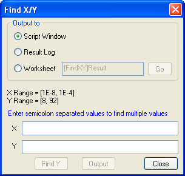
- Aktivieren Sie die Option Arbeitsblatt und geben Sie 40;45;50 für Y ein. Klicken Sie dann auf X suchen, um die entsprechenden X-Werte im leeren X-Feld zu zeigen. Klicken Sie danach auf die Schaltfläche Ausgabe. Die X- und Y-Werte werden in dem angegebenen Arbeitsblatt ausgegeben.
- 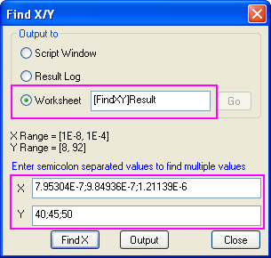
- Klicken Sie auf die Schaltfläche Gehe zu neben der Option Arbeitsblatt, um die Arbeitsmappe X/Y suchen aufzurufen. Klicken Sie dann auf die Schaltfläche Schließen, um den Dialog X/Y suchen zu schließen.
- 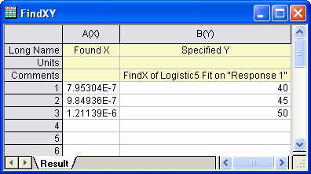